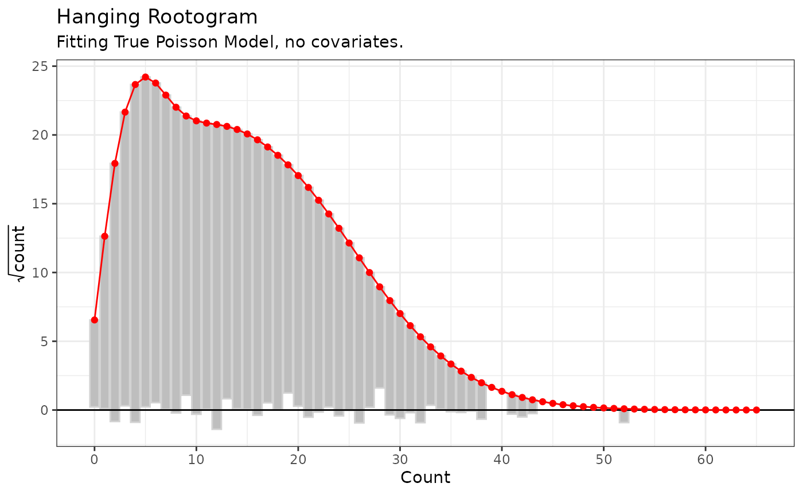
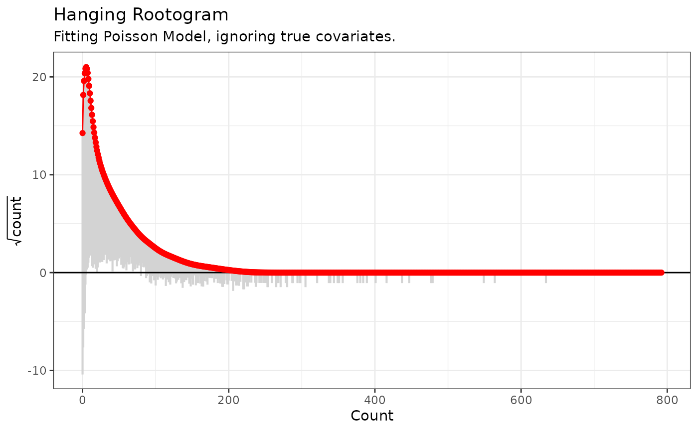
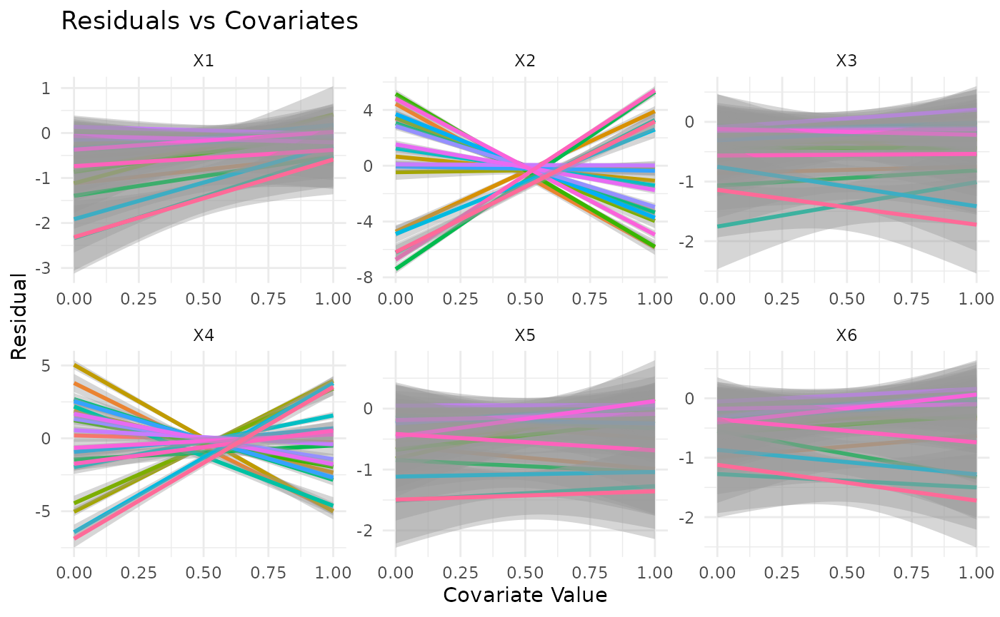
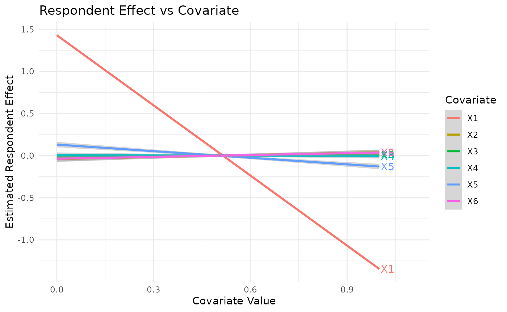

This vignette provides a brief introduction to some of the tools
available in networkscaleup for assessing the fit of common
ARD models to simulated data.
Simulating Data
We first simulate two datasets from the classical Poisson ARD model, one with no covariate information and one with covariates.
set.seed(2)
sim_dat_1 <- make_ard(family = "poisson")
sim_dat_2 <- make_ard(
p = 6,
p_local_nonzero = 2,
p_global_nonzero = 1,
family = "poisson"
)We will then examine the impact of this covariate structure and the choice of model fit using our diagnostics.
Hanging Rootograms
We first fit a Poisson model to both of these simulated examples, ignoring the covariate information. We see that for the simple model, with no covariate structure, the rootogram indicates good fit.
pois_fit_list_1 <- fit_mle(sim_dat_1$ard, family = "poisson")
pois_root_1 <- hang_rootogram_ard(
ard = sim_dat_1$ard,
model_fit = pois_fit_list_1
)
pois_root_1 + labs(subtitle = "Fitting True Poisson Model, no covariates.")
We can also fit this model to the data which has true covariate structure, which is ignored. The rootogram captures this lack of model fit.
pois_fit_list_2 <- fit_mle(sim_dat_2$ard, family = "poisson")
pois_root_2 <- hang_rootogram_ard(
ard = sim_dat_2$ard,
model_fit = pois_fit_list_2
)
pois_root_2 + labs(subtitle = "Fitting Poisson Model, ignoring true covariates.")
Testing for Covariates
We can also use our tests to identify the impact of group level and respondent level covariates for the simulated data with covariates. We plot residuals for the fitted model against the values of each covariate. These plots identify the true covariate structure present.
cov_p_list <- cov_plots(
ard = sim_dat_2$ard,
model_fit = pois_fit_list_2,
x_cov = sim_dat_2$x_cov,
se = T
)
local_cov_plot <- cov_p_list$Group_plot
global_cov_plot <- cov_p_list$Respondent_plot
local_cov_plot # Suggests x2 and x4
#> `geom_smooth()` using formula = 'y ~ x'
global_cov_plot # Suggests x1
#> `geom_smooth()` using formula = 'y ~ x'